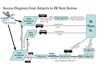

| Travel Information |
| Transportation to Nara from abroad is shown in the following diagram. |
 (Click image to enlarge) |
| Traffic system in Japan is rather complicated. The most convenient way of transportation is to take a direct flight to the Kansai International Airport (KIX). We recommend the following simplest access way to Nara City: take an Airport Limousine Bus going to Nara City directly. The bus takes approximately 85 minutes to arrive at JR(Japan-Railway) Nara Station. This costs JPY 1,800 one way, per person. Buses depart from stop No. 9 and are scheduled 7:40~20:40 to depart approximately once every 60 minutes. Should there be any inquiries regarding access to Nara, please ask at the Information Desk at the airport on the first floor in front of the arrivals area. Another popular way from Kansai International Airport to Nara City is to use trains. First, take a JR train going to Osaka, get off the train at Ten-ouji (after about 45 minutes), change to another JR train going to Nara City and get off at Nara JR Station (after about 35 minutes). Trains are quite frequent (several trains an hour) and working from 6:45 to 22:33 (the convenient expresses, Yamatoji-Express, are working between 9:57 and 16:59). There is another airport in Osaka, Osaka (Itami) Airport. This airport is mostly for domestic flight. We do not recommend to use this airport. If you must land at Osaka (Itami) Airport, please contact us. From Narita International Airport near Tokyo, you can access to Nara by Airplane (domestic flight to Osaka Itami or Kansai International Airport and Limousine bus) or Railway (Shinkansen Bullet train and local Express). It takes about 2 hours and 30 minutes by Airplane with costs approximately JPY 20,500 or 4 hours by train with costs JPY 17,000 except for waiting time. There are two trains from Kyoto to Nara. The first one, JR train, is convenient if you use the JR Shinkansen Bullet train. It leaves JR Kyoto Station every 30 minutes approximately, and arrive at JR Nara Station after 41 minutes (the Miyakoji-Express is recommended that is faster than local train and working from 9:19 to 16:50). The second one, Kintetsu train, is little bit faster than JR train but passengers must often change the train at Yamato-Saidaiji Station and arrive at Kintetsu Nara Station (at a distance of 10 minutes walk form JR Nara Station). At JR Nara Station, graduate students will guide you to the hotel (see Hotels and Reservation). It is 15 minutes walk form there to Nara Women's University (http://www.nara-wu.ac.jp/index-e.html) and 10 minutes walk to Kintetsu Nara Station. Remark that there is no our guide at the Kintetsu Nara Station. If you arrive at there, please ask a staff of the station the way to Nara Women's University (5 minutes walk) or the hotel (about 10 minutes walk). The information map is here (http://koto.nara-wu.ac.jp/gakusei/ryugaku/NWU_GFS/information.html). It is recommended that participants planning to travel in Japan purchase a Japan Rail Pass (http://www.japanrailpass.net/). This pass encompasses all JR trains including the Bullet train (Shinkansen) and the Narita Express. Please note that this pass must be purchased prior to arrival since it cannot be purchased in Japan. The price for a 7-day pass is about JPY 30,000. |
| Visa Information |
| Citizens of 59 countries, including U.S.A, Canada, EU members, are not
required any visa for short-term stays. Citizens of other countries should
contact the Consular Section of the Japanese Embassy or a Consulate General
of Japan. For details, see the web-page of Ministry of Foreign Affairs
: http://www.mofa.go.jp/j_info/visit/visa/ If the Consular Section requires you an official document which proves that you will travel to Japan to attend ACA2005, please send an e-mail to ACA2005@hpc.cs.ehime-u.ac.jp. Please start the visa getting as early as possible, so as to deal with unexpected difficulties or happenings. If you have any questions or will face some difficulty, please be free to send an e-mail to ACA2005@hpc.cs.ehime-u.ac.jp. |